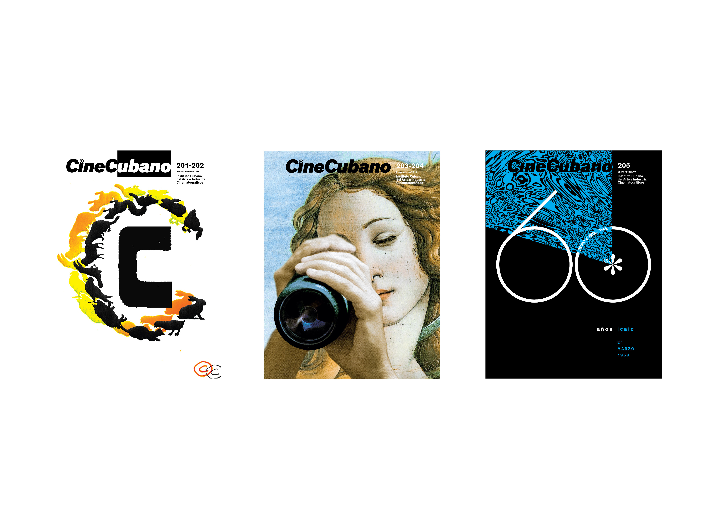
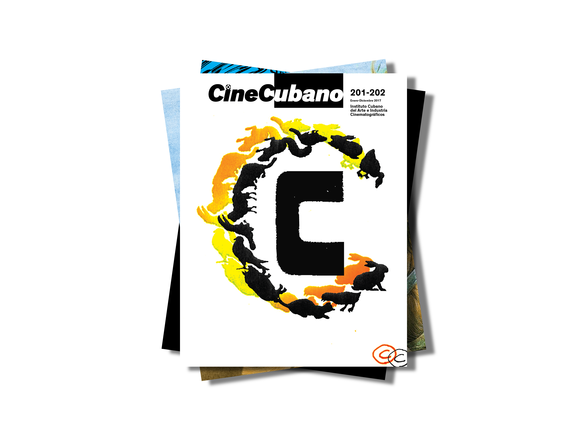
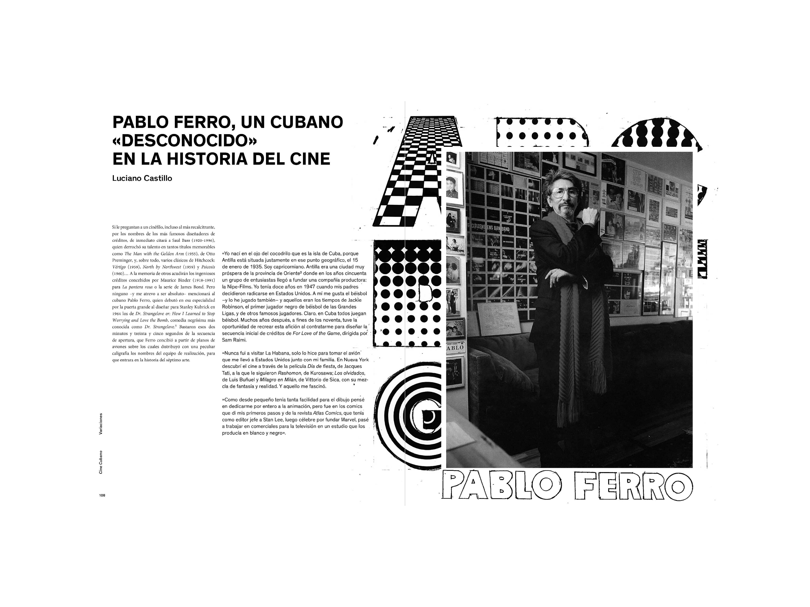
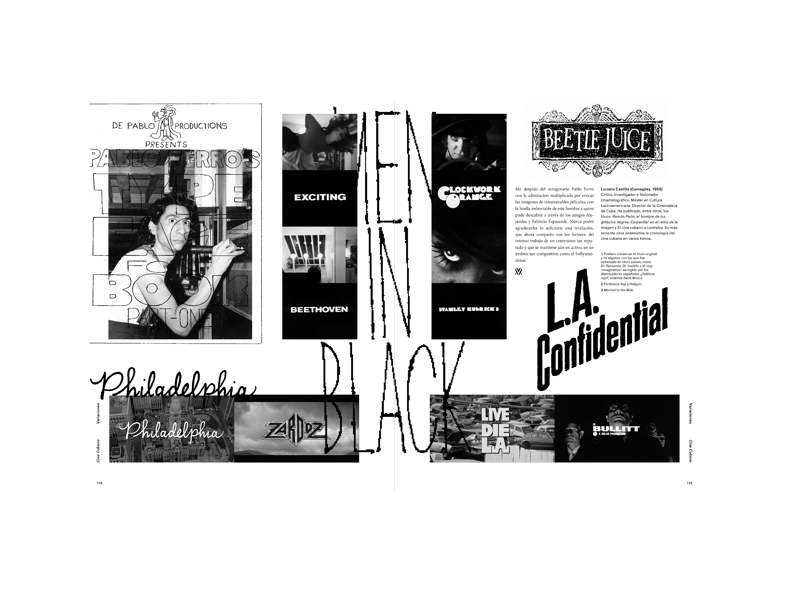
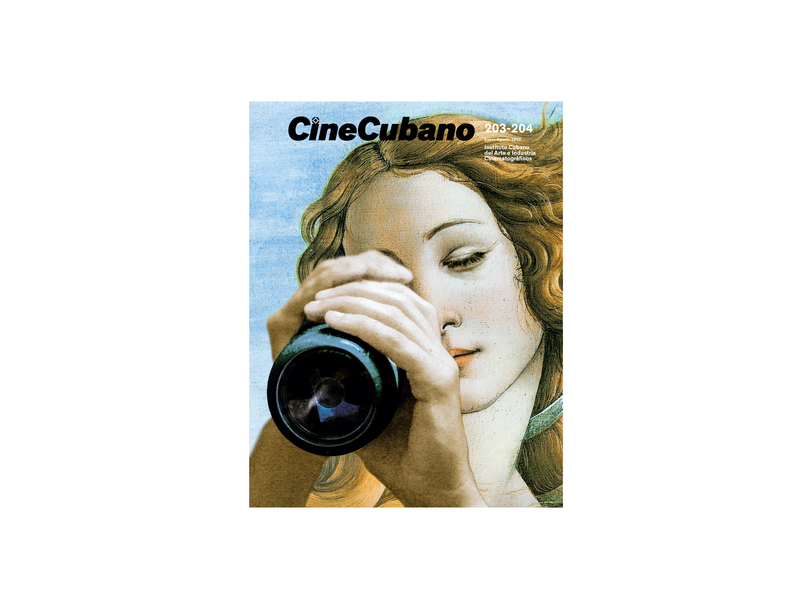
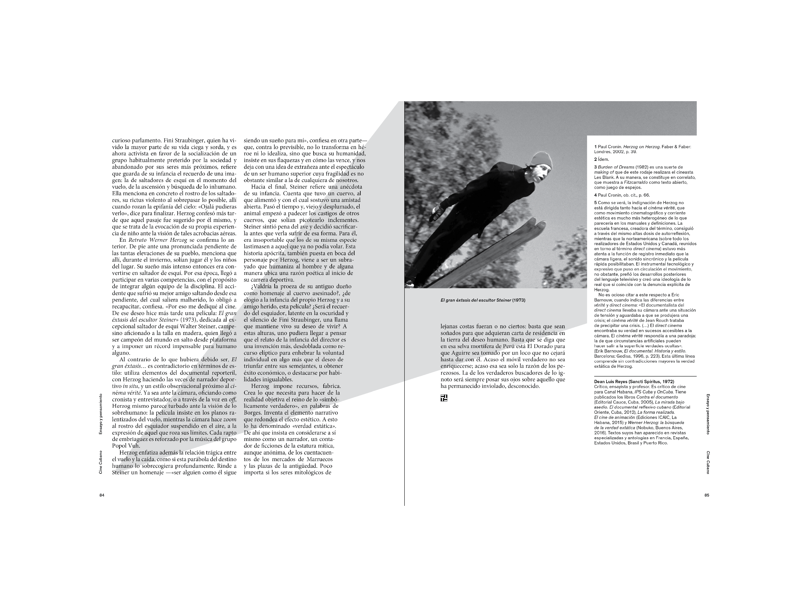
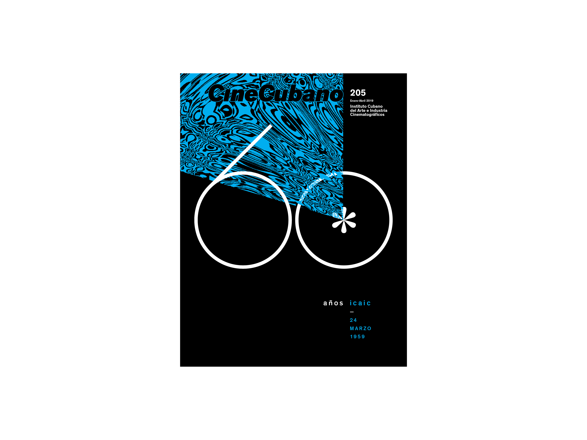
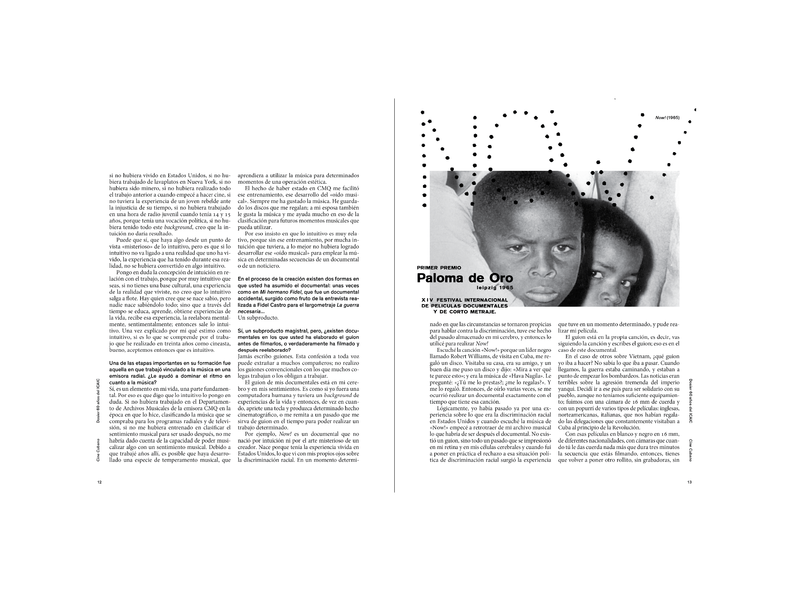

Cine Cubano Magazine
Art direction and editorial design for the official publication of the Cuban Institute of Cinematographic Art and Industry (ICAIC). Issues published between 2017-2021.
- Editorial Design
- Art Direction
- Sole Graphic Designer






